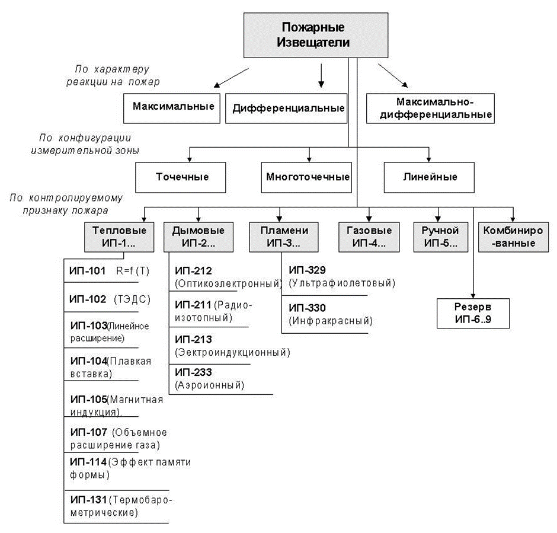
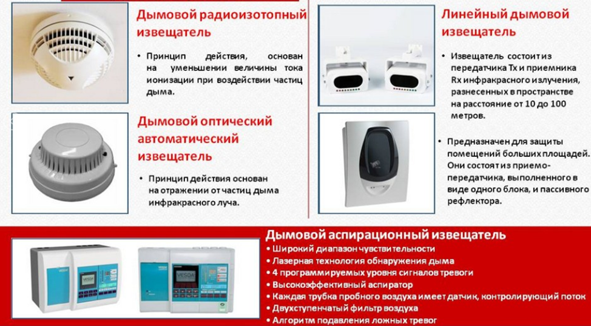
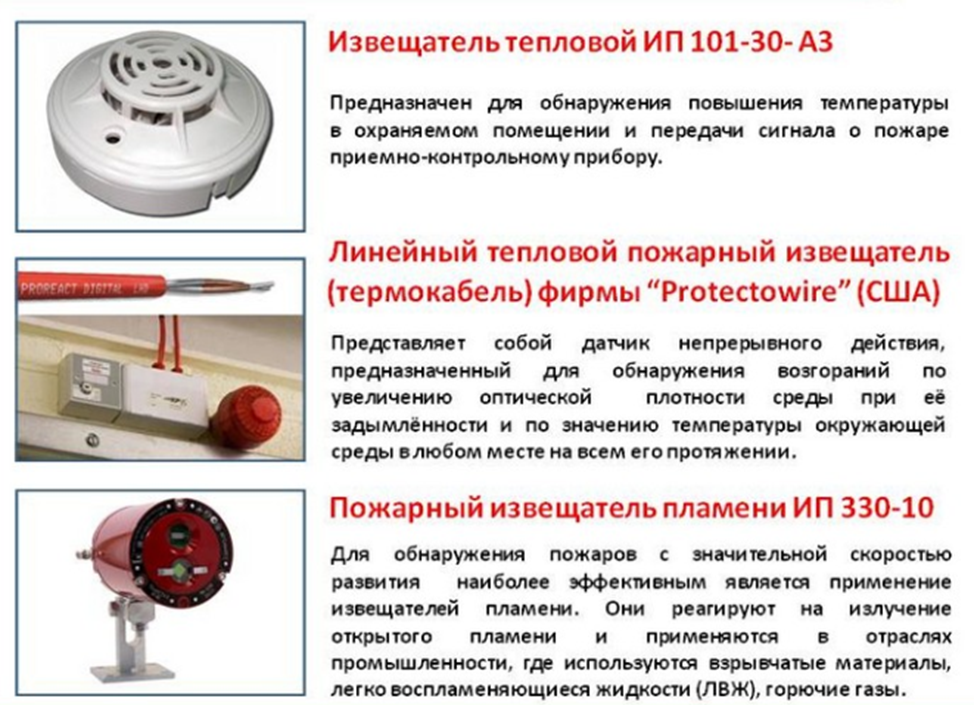
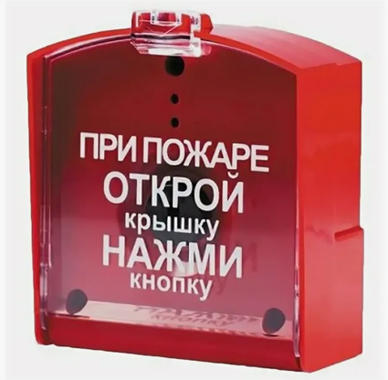

Автоматическая пожарная сигнализация. Основные сведения

В ходе данного занятия вы познакомитесь с понятием пожарная сигнализация, ее видами и основными элементами системы. Мы постараемся изложить материал в доступной форме, избегая сложных технических терминов, чтобы вы смогли получить базовые знания в области обеспечения пожарной безопасности и уверенно применять их в своей профессиональной деятельности.
Одним из эффективных методов предотвращения пожаров и убытков от них является применение пожарной автоматики. Пожарная автоматика включает в себя автоматические системы обнаружения пожара (пожарная сигнализация)
Пожарные извещатели
В соответствии с действующими стандартами технические средства обнаружения пожарной сигнализации делятся на группы рисунке ниже.

Одной из главных функций систем пожарной сигнализации является выдача адреса возникшего загорания.
Наибольшее распространение в автоматических системах пожарной сигнализации получили тепловые и дымовые пожарные извещатели. Это объясняется как спецификой начальной фазы процесса горения большинства пожароопасных веществ, так и относительной простотой схемных и конструктивных решений этих извещателей.
Для раннего обнаружения возгораний в любой точке охраняемого объекта были созданы термокабели. Они представляют собой систему непрерывного пожарного оповещения, которая охватывает всю площадь объекта.
Анализ производства и применения тепловых пожарных извещателей в России и за рубежом показывает, что наиболее перспективными являются максимально дифференциальные и линейные пожарные извещатели.
Дымовые пожарные извещатели, наиболее широко используемые у нас в стране и за рубежом.
Фотоэлектрические пожарные извещатели, предназначенные для обнаружения дыма, делятся на два типа: точечные и линейные.
Принцип работы точечных фотоэлектрических пожарных извещателей основан на регистрации оптического излучения, которое отражается от частиц дыма, попадающих в дымовую камеру извещателя.
Точечные фотоэлектрические пожарные извещатели обладают высокой чувствительностью к светлому и серому дыму, но менее чувствительны к тёмному дыму, который плохо отражает электромагнитное излучение источника света.
Линейные дымовые пожарные извещатели работают по принципу ослабления электромагнитного потока между источником излучения и фотоприёмником, которые находятся на некотором расстоянии друг от друга. Это происходит из-за того, что частицы дыма поглощают часть излучения.
Линейные дымовые пожарные извещатели имеют ряд преимуществ, среди которых можно выделить большую дальность действия (до 100 метров). Они также хорошо реагируют на темный и серый дым.

В течение нескольких лет на российском рынке появились новые устройства — аспирационные дымовые пожарные извещатели.
Их основное отличие от обычных дымовых извещателей заключается в наличии вентилятора (аспиратора), который непрерывно прокачивает воздух через дымовую камеру извещателя и анализирует его.
Для забора проб воздуха используются специальные трубопроводы с калиброванными отверстиями. Это позволяет повысить чувствительность аспирационного извещателя по сравнению с обычными в 100–300 раз.
Извещатели пламени — это устройства, которые улавливают электромагнитное излучение от огня. Они работают в инфракрасном или ультрафиолетовом диапазоне волн.

Извещатель ручной – предназначен для передачи тревожных извещений о пожаре системы пожарной сигнализации. Инициируется нажатием на кнопку.

Приемно-контрольные устройства должны выполнять следующие функции:
- Принимать сигналы от ручных и автоматических пожарных датчиков, отображая номер шлейфа, с которого поступил сигнал.
- Контролировать состояние шлейфа автоматической пожарной сигнализации по всей его длине, автоматически обнаруживать повреждения и оповещать о них.
- Подавать световые и звуковые сигналы о поступающих сигналах тревоги или повреждения.
- Различать сигналы тревоги и повреждения.
- Автоматически переключаться на резервное питание при отключении основного и обратно, включая соответствующую сигнализацию, без ложных сигналов. В случае необходимости, вручную включать любой шлейф.
- Подключать устройства для дублирования сигналов тревоги и повреждения.